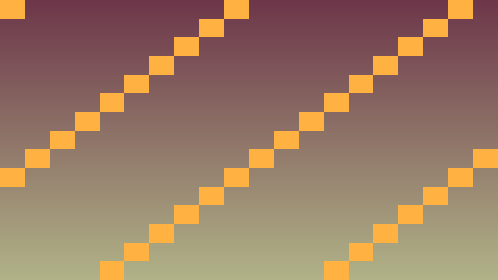

3.1 C# class (klases) pamati
Stundas uzdevums: Saprast OOP (objektorientētā programmēšana) fundamentālo konceptu - class un object (objekti) - un izveidot pirmo dalībnieka class.
80 min plāns: Teorija un paraugs (~10 min) · 1. uzdevums (~20 min) - izveido pirmo class ar field (laukiem) · 2. uzdevums (~25 min) - pievieno constructor (konstruktoru) un method (metodes) · 3. uzdevums (~20 min) - pārbaudi private (privāta piekļuve) un public (publiska piekļuve) atšķirību · Iesniegšana (~5 min).
Pirms sāc: šī ir pirmā stunda par class. Atceries no Programmēšanas I dictionary (vārdnīcas): dalibnieks = {"vards": "Anna", "energija": 100}. Class ir tas pats, tikai ar iebūvētām function (funkcijām) un stingru kārtību.
Teorija: C# class struktūra
Class ir veidne object radīšanai. Tā satur datus (attribute (atribūtus)) un function (method).
public class Participant
{
private int energy; // tikai klases iekšienē pieejams
private int maxEnergy;
public string Name;
public int Level = 1;
// Konstruktors
public Participant(string name, int energy)
{
Name = name;
this.energy = energy;
maxEnergy = energy;
}
// Metodes
public void ApplyPenalty(int amount)
{
energy -= amount;
if (energy < 0) energy = 0;
}
public bool IsActive()
{
return energy > 0;
}
public int GetEnergy() => energy;
}public/private/protected (aizsargāta piekļuve) kontrolē encapsulation (iekapsulāciju).
Kā šo izmantot projektā
Atceries: ar redzamu efektu redaktorā nepietiek. Paskaidro, kura C# class glabā stāvokli, kura method to maina un kā Godot node (mezgls) struktūra izmanto šo kodu.
Pārbaudi: katrai būtiskai turnīra lomai ir C# class vienā .cs failā, ar constructor, method, signal (signāliem) vai inheritance (mantošanu).
public class OopCheckpoint
{
public string Lesson = "3.1 C# klases pamati";
public bool UsesCSharp = true;
public bool HasScriptFile = true;
public bool HasSingleResponsibility = true;
public bool UsesGodotInspector = true;
}Praktiskie uzdevumi
1. uzdevums -
Izveido pirmo class ar field
Beigās viens object glabās visus dalībnieka datus kopā.
- Uzraksti README.md failā Python dictionary, kas glabā dalībnieka vārdu, enerģiju un līmeni.
- Izveido failu
Participant.cs. - Ieraksti
public class Participant { }. - Pievieno publiskus field ar keyword (atslēgvārdu)
public. - Pieteic tajā field
public string Name;,public int Energy;unpublic int Level = 1;. - Izveido object citā failā un piešķir tā field vērtības.
- Izdrukā visus trīs field un būvē projektu.
Gatavs, kad: izdrukā redzami visi trīs field, un tu vari parādīt, kura koda rinda atbilst kurai dictionary atslēgai.
2. uzdevums -
Pievieno constructor un method
Beigās object varēsi izveidot vienā rindā, un tas pats pratīs sevi mainīt.
- Pievieno class constructor
public Participant(string name, int energy) { Name = name; Energy = energy; }. - Izveido object ar
Participant p = new Participant("Anna", 100);. - Pievieno method
public void ApplyPenalty(int amount). - Ieraksti tajā enerģijas samazināšanu un pārbaudi, ka tā nekļūst negatīva.
- Pievieno method
public bool IsActive(), kas atgriežEnergy > 0. - Izsauc abas method un izdrukā rezultātu.
- Pieraksti, ar ko method atšķiras no parastas function.
Gatavs, kad: object var izveidot vienā rindā, un pēc liela soda enerģija ir tieši 0, nevis negatīva.
3. uzdevums -
Pārbaudi private un public atšķirību
Beigās tu zināsi, kāpēc daļu datu paslēpj.
- Pārvieto field
Energyuz privātu fieldprivate int energy;. - Mēģini to nomainīt no ārpuses ar
p.energy = 9999;. - Būvē projektu un pieraksti compiler error (kompilatora kļūdas) tekstu.
- Pievieno publisku method
public int GetEnergy(). - Nolasi enerģiju caur šo method un izdrukā to.
- Pieraksti, kāpēc ir labi, ka enerģiju var mainīt tikai caur
ApplyPenalty(). - Pārliecinies, ka projekts būvējas bez kļūdām.
Gatavs, kad: tieša piekļuve privātam field dod compiler error, bet caur method vērtību nolasīt var.
Papildu uzdevums - Izveido komandu no trim dalībniekiem
Ja pamatdarbs ir gatavs, strādā ar vairākiem object reizē.
- Pievieno faila sākumā
using System.Collections.Generic;. - Izveido
List<Participant> team = new();. - Pievieno tam trīs dalībniekus ar dažādām enerģijām.
- Uzraksti loop (ciklu), kas izdrukā katra vārdu un enerģiju.
- Saskaiti loop, cik dalībnieku vēl ir aktīvi.
Gatavs, kad: loop izdrukā visus trīs dalībniekus un pareizi saskaita aktīvos.
Ko sagatavo
Stundas mērķis: Tu proti C# uzrakstīt class ar field, constructor un method, izveidot no tās object un paskaidrot, kāpēc daļa field ir private.
GitHub krātuvē jābūt:
- Fails
Participant.cs. - Ekrānuzņēmums ar Output paneli, kurā redzami dalībnieka dati un enerģija pēc soda.
- README.md: Python dictionary un tai atbilstošā C# class blakus, un viens teikums, kāpēc
energyirprivate.
Kā iesniedz: Veic commit (izmaiņu fiksējums) un push (nosūtīšana uz attālo krātuvi). Skolotāja norādītajā vietā ievieto tikai GitHub krātuves saiti; visiem prasītajiem failiem, README.md pierakstiem un pierādījumiem jābūt pašā krātuvē.
Biežākās kļūdas
- Cannot access private member (nevar piekļūt privātam loceklim): Mēģini piekļūt private field ārpus class - lieto getter (nolasīšanas metode).
- The nosaukums 'energy' does not exist: pārbaudi, vai field nosaukums sakrīt ar to, ko lieto method.
- CS0122 private kļūda: mēģini piekļūt privātam field ārpus class - lieto
GetEnergy().
Godot ekrānuzņēmumi

Koda piemērs (paplašināts)
using Godot;
using System;
public class Participant
{
private int energy;
private int maxEnergy;
private int focus;
private int calm;
public string Name { get; }
public Participant(string name, int energy, int focus, int calm)
{
Name = name;
this.energy = energy;
maxEnergy = energy;
this.focus = focus;
this.calm = calm;
}
public void ApplyPenalty(int amount)
{
int actual = Math.Max(0, amount - calm);
energy = Math.Max(0, energy - actual);
GD.Print(Name, " zaudē ", actual, " enerģijas punktus. ENERGY: ", energy);
}
public bool IsActive() => energy > 0;
public void PrintStatus()
{
GD.Print(Name, " ENERGY: ", energy, "/", maxEnergy,
" FOCUS: ", focus, " CALM: ", calm);
}
}